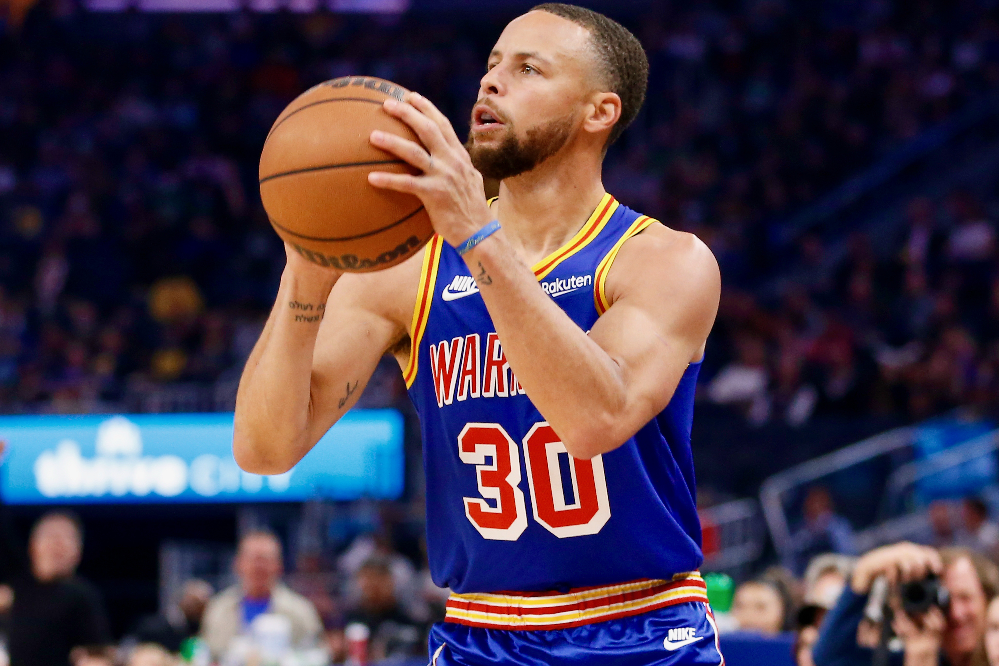
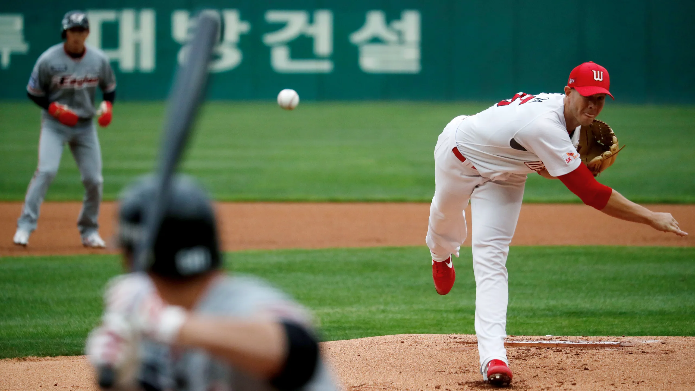

Although it is quite difficult to estimate exact participation numbers for sports around the world, it is possible to give a general idea of some of the most participated sports using available research, although we appreciate that the list is open to debate.
Few things can rival football as a spectator sport and this is also matched by the number of people who participate in the sport, be it at grassroots level, 5-a-side leagues or simply playing for fun with friends. In the last global census undertaken by the sports governing body FIFA, it was estimated that there are 265 million people who play the sport along with more than 5 million referees, which equates to 4% of the world’s population.
The Federation of International Basketball Associations (FIBA) estimates that a minimum of 450 million people play the sport around the world, be it recreationally or through structured competitions. Legendary figures in the world of basketball such as Michael Jordan and Kobe Bryant, have aided the rise in global popularity of the sport from its American roots.
Originating from America, volleyball boasts an impressive estimated global participation figure of 998 million people. Indoor and outdoor versions of the sport are played all over the world, with over 220 affiliated national federations registered to volleyball’s global governing body the ‘FIVB’.

Widely recognised as the most popular individual sport in the world, tennis is played by an estimated number of 60 million men and women around the world, according to a ranking by Topend Sports. The doubles version of the sport is also extremely popular around the world, which is why it ranks on this 5 most participated sports list.
Historically baseball was more popular in America than anywhere else in the world but the sport is now becoming increasingly popular in other countries such as Japan. Softball is the female version of the game, and it is estimated by the World Baseball Softball Confederation (WBSC) that 65 million people play either baseball or softball in over 140 countries.
